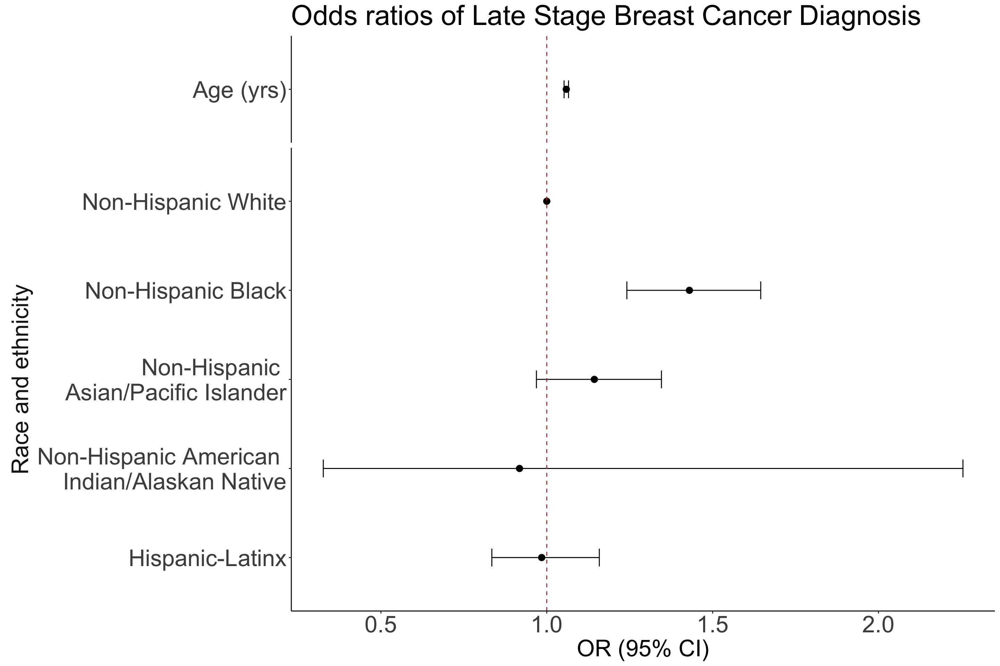
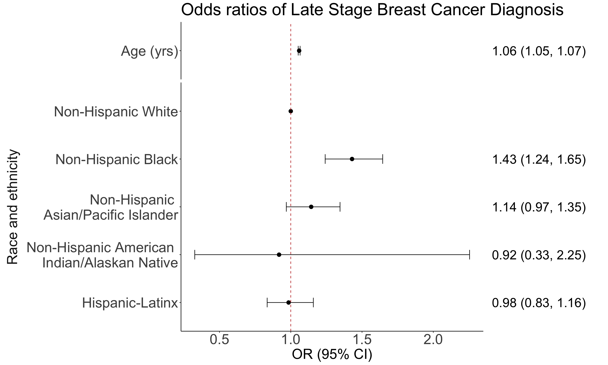

Lesson 10: Multiple Logistic Regression
Learning Objectives
Construct and fit a multiple logistic regression model
Test for significance of individual coefficients or sets of coefficients in multiple logistic regression
Estimate the predicted probability of our outcome using multiple logistic regression
Present the odds ratios for multiple variables at once
Interpret odds ratios for coefficients while adjusting for other variables
Last class
Looked at simple logistic regression for binary outcome with
- One continuous predictor \[\text{logit}(\pi(X)) = \beta_0 + \beta_1 \cdot X\]
- One binary predictor \[\text{logit}\left(\pi(X) \right) = \beta_0 + \beta_1 \cdot I(X=1)\]
- One multi-level predictor \[\text{logit}\left(\pi(X) \right) = \beta_0 + \beta_1 \cdot I(X=b) + \beta_2 \cdot I(X=c) + \beta_3 \cdot I(X=d)\]
Breast Cancer example
For breast cancer diagnosis example, recall:
- Outcome: early or late stage breast cancer diagnosis (binary, categorical)
Primary covariate: Race/ethnicity
Non-Hispanic white individuals are more likely to be diagnosed with breast cancer
- But POC are more likely to be diagnosed at a later stage
Additional covariate: Age
- Risk factor for cancer diagnosis
- We want to fit a multiple logistic regression model with both risk factors included as independent variables
Learning Objectives
- Construct and fit a multiple logistic regression model
Test for significance of individual coefficients or sets of coefficients in multiple logistic regression
Estimate the predicted probability of our outcome using multiple logistic regression
Present the odds ratios for multiple variables at once
Interpret odds ratios for coefficients while adjusting for other variables
Introduction to Multiple Logistic Regression
In multiple logistic regression model, we have > 1 independent variable
Sometimes referred to as the “multivariable regression”
The independent variable can be any type:
- Continuous
- Categorical (ordinal or nominal)
We will follow similar procedures as we did for simple logistic regression
- But we need to change our interpretation of estimates because we are adjusting for other variables
Multiple Logistic Regression Model
- Assume we have a collection of \(k\) independent variables, denoted by \(\mathbf{X}=\left( X_1, X_2, ..., X_k \right)\)
- The conditional probability is \(P(Y=1 | \mathbf{X}) = \pi(\mathbf{X})\)
- We then model the probability with logistic regression: \[\text{logit}\left(\pi(\mathbf{X})\right) = \beta_0 +\beta_1 \cdot X_1 +\beta_2 \cdot X_2 +\beta_3 \cdot X_3 + ... + \beta_k \cdot X_k\]
Why the bold \(X\)?
\(\mathbf{X}\) represents the vector of all the \(X\)’s. This is how we represent our group of covariates in our model.
Fitting the Multiple Logistic Regression Model
- For a multiple logistic regression model with \(k\) independent variables, the vector of coefficients can be denoted by \[\boldsymbol{\beta}^{T} = \left(\beta_0, \beta_1, \beta_2, ..., \beta_k \right)\]
As with the simple logistic regression, we use maximum likelihood method for estimating coefficients
- Vector of estimated coefficients: \[\widehat{\boldsymbol{\beta}}^{T} = \left(\widehat{\beta}_0, \widehat{\beta}_1, \widehat{\beta}_2, ..., \widehat{\beta}_k \right)\]
For a model with \(k\) independent variables, there is \(k+1\) coefficients to estimate
- Unless one of those independent variables is a multi-level categorical variables, then we need more than \(k+1\) coefficients
Breast Cancer Example: Population Model
- We can fit a logistic regression model with both race and ethnicity and age:
\[ \begin{aligned} \text{logit}\left(\pi(\mathbf{X})\right) = & \beta_0 +\beta_1 \cdot I \left( R/E = H/L \right) +\beta_2 \cdot I \left( R/E = NH AIAN \right) \\ & +\beta_3 \cdot I \left( R/E = NH API \right) +\beta_4 \cdot I \left( R/E = NH B \right) +\beta_5 \cdot Age \end{aligned}\]
- Note that race and ethnicity requires 4 coefficients to include the indicator for each category
- Can replace \(\pi(\mathbf{X})\) with \(\pi({\text{Race/ethnicity, Age}})\)
- 6 total coefficients (\(\beta_0\) to \(\beta_5\))
Fitting Multiple Logistic Regression Model
multi_bc = glm(Late_stage_diag ~ Race_Ethnicity + Age_c, data = bc, family = binomial)
summary(multi_bc)
Call:
glm(formula = Late_stage_diag ~ Race_Ethnicity + Age_c, family = binomial,
data = bc)
Coefficients:
Estimate Std. Error z value
(Intercept) -1.038389 0.027292 -38.048
Race_EthnicityHispanic-Latino -0.015424 0.083653 -0.184
Race_EthnicityNH American Indian/Alaskan Native -0.085704 0.484110 -0.177
Race_EthnicityNH Asian/Pacific Islander 0.133965 0.083797 1.599
Race_EthnicityNH Black 0.357692 0.071789 4.983
Age_c 0.057151 0.003209 17.811
Pr(>|z|)
(Intercept) < 2e-16 ***
Race_EthnicityHispanic-Latino 0.854
Race_EthnicityNH American Indian/Alaskan Native 0.859
Race_EthnicityNH Asian/Pacific Islander 0.110
Race_EthnicityNH Black 6.27e-07 ***
Age_c < 2e-16 ***
---
Signif. codes: 0 '***' 0.001 '**' 0.01 '*' 0.05 '.' 0.1 ' ' 1
(Dispersion parameter for binomial family taken to be 1)
Null deviance: 11861 on 9999 degrees of freedom
Residual deviance: 11484 on 9994 degrees of freedom
AIC: 11496
Number of Fisher Scoring iterations: 4Breast Cancer Example: Fitted Model
- We now have the fitted logistic regression model with both race and ethnicity and age:
\[ \begin{aligned} \text{logit}\left(\widehat{\pi}(\mathbf{X})\right) = & \widehat{\beta}_0 + \widehat{\beta}_1 \cdot I \left( R/E = H/L \right) + \widehat{\beta}_2 \cdot I \left( R/E = NH AIAN \right) \\ & + \widehat{\beta}_3 \cdot I \left( R/E = NH API \right) + \widehat{\beta}_4 \cdot I \left( R/E = NH B \right) + \widehat{\beta}_5 \cdot Age \\ \\ \text{logit}\left(\widehat{\pi}(\mathbf{X})\right) = &-4.56 -0.02 \cdot I \left( R/E = H/L \right) -0.09 \cdot I \left( R/E = NH AIAN \right) \\ & +0.13 \cdot I \left( R/E = NH API \right) +0.36 \cdot I \left( R/E = NH B \right) +0.06 \cdot Age \end{aligned}\]
- 6 total coefficients (\(\widehat{\beta}_0\) to \(\widehat{\beta}_5\))
Learning Objectives
- Construct and fit a multiple logistic regression model
- Test for significance of individual coefficients or sets of coefficients in multiple logistic regression
Estimate the predicted probability of our outcome using multiple logistic regression
Present the odds ratios for multiple variables at once
Interpret odds ratios for coefficients while adjusting for other variables
Testing Significance of the Coefficients
- Refer to Lesson 6 for more information on each test!!
We use the same three tests that we discussed in Simple Logistic Regression to test individual coefficients
Wald test
- Can be used to test a single coefficient
Score testLikelihood ratio test (LRT)
- Can be used to test a single coefficient or multiple coefficients
- Textbook and our class focuses on Wald and LRT only
A note on wording
When I say “test a single coefficient” or “test multiple coefficients” I am referring to the \(\beta\)’s
- A single variable can have a single coefficient
- Example: testing age
- A single variable can have multiple coefficients
- Example: testing race and ethnicity
- Muliple variables will have multiple coefficients
- Example: testing age and race and ethnicity together
- A single variable can have a single coefficient
When I say “test a variable” I mean “determine if the model with the variable is more likely than the model without that variable”
- We can use the Wald test to do this is some scenarios (single, continuous covariate)
- BUT I advise you practice using the LRT whenever comparing models (aka testing variables)
All three tests together

From Lesson 6: Wald test
Assumes test statistic W follows a standard normal distribution under the null hypothesis
Test statistic: \[W=\frac{{\hat{\beta}}_j}{SE_{\hat{\beta}_j}}\sim N(0,1)\]
- where \(\widehat{\beta}_j\) is a MLE of coefficient \(j\)
95% Wald confidence interval: \[{\hat{\beta}}_1\pm1.96 \cdot SE_{{\hat{\beta}}_j}\]
The Wald test is a routine output in R (
summary()ofglm()output)- Includes \(SE_{{\hat{\beta}}_j}\) and can easily find confidence interval with
tidy()
- Includes \(SE_{{\hat{\beta}}_j}\) and can easily find confidence interval with
Important note: Wald test is best for confidence intervals of our coefficient estimates or estimated odds ratios.
Wald test procedure with confidence intervals
Set the level of significance \(\alpha\)
Specify the null ( \(H_0\) ) and alternative ( \(H_A\) ) hypotheses
- In symbols
- In words
- Alternative: one- or two-sided?
Calculate the confidence interval and determine if it overlaps with null
- Overlap with null (usually 0 for coefficient) = fail to reject null
- No overlap with null (usually 0 for coefficient) = reject null
Write a conclusion to the hypothesis test
- What is the estimate and its confidence interval?
- Do we reject or fail to reject \(H_0\)?
- Write a conclusion in the context of the problem
Wald test in our example
- From our multiple logistic regression model:
\[ \begin{aligned} \text{logit}\left(\pi(x_i)\right) = & \beta_0 +\beta_1 \cdot I \left( R/E = H/L \right) +\beta_2 \cdot I \left( R/E = NH AIAN \right) \\ & +\beta_3 \cdot I \left( R/E = NH API \right) +\beta_4 \cdot I \left( R/E = NH B \right) +\beta_5 \cdot Age \end{aligned}\]
- Wald test can help us construct the confidence interval for ALL coefficient estimates
If we want to use the Wald test to determine if a covariate is significant in our model
- Can only do so for age
Example 1: Single, continuous variable: Age
Single, continuous variable: Age
Given race and ethnicity is already in the model, is the regression model with age more likely than the model without age?
Needed steps:
- Set the level of significance \(\alpha\)
- Specify the null ( \(H_0\) ) and alternative ( \(H_A\) ) hypotheses
- Calculate the confidence interval and determine if it overlaps with null
- Write a conclusion to the hypothesis test
Example 1: Single, continuous variable: Age
Single, continuous variable: Age
Given race and ethnicity is already in the model, is the regression model with age more likely than the model without age?
Set the level of significance \(\alpha\)
- \(\alpha = 0.05\)
Specify the null ( \(H_0\) ) and alternative ( \(H_A\) ) hypotheses
- \(H_0: \beta_5 = 0\)
- \(H_1: \beta_5 \neq 0\)
Example 1: Single, continuous variable: Age
Single, continuous variable: Age
Given race and ethnicity is already in the model, is the regression model with age more likely than the model without age?
- Calculate the confidence interval and determine if it overlaps with null
- Look at coefficient estimates (CI should not contain 0) OR estimated odds ratio (CI should not contain 1)
tidy(multi_bc, conf.int=T) %>%
gt() %>%
tab_options(table.font.size = 28) %>%
fmt_number(decimals = 2)| term | estimate | std.error | statistic | p.value | conf.low | conf.high |
|---|---|---|---|---|---|---|
| (Intercept) | −1.04 | 0.03 | −38.05 | 0.00 | −1.09 | −0.99 |
| Race_EthnicityHispanic-Latino | −0.02 | 0.08 | −0.18 | 0.85 | −0.18 | 0.15 |
| Race_EthnicityNH American Indian/Alaskan Native | −0.09 | 0.48 | −0.18 | 0.86 | −1.12 | 0.81 |
| Race_EthnicityNH Asian/Pacific Islander | 0.13 | 0.08 | 1.60 | 0.11 | −0.03 | 0.30 |
| Race_EthnicityNH Black | 0.36 | 0.07 | 4.98 | 0.00 | 0.22 | 0.50 |
| Age_c | 0.06 | 0.00 | 17.81 | 0.00 | 0.05 | 0.06 |
Example 1: Single, continuous variable: Age
Single, continuous variable: Age
Given race and ethnicity is already in the model, is the regression model with age more likely than the model without age?
- Calculate the confidence interval and determine if it overlaps with null
- Look at coefficient estimates (CI should not contain 0) OR estimated odds ratio (CI should not contain 1)
tbl_regression(multi_bc,
exponentiate = TRUE) %>%
as_gt() %>%
tab_options(table.font.size = 30)| Characteristic | OR1 | 95% CI1 | p-value |
|---|---|---|---|
| Race_Ethnicity | |||
| NH White | — | — | |
| Hispanic-Latino | 0.98 | 0.83, 1.16 | 0.9 |
| NH American Indian/Alaskan Native | 0.92 | 0.33, 2.25 | 0.9 |
| NH Asian/Pacific Islander | 1.14 | 0.97, 1.35 | 0.11 |
| NH Black | 1.43 | 1.24, 1.65 | <0.001 |
| Age_c | 1.06 | 1.05, 1.07 | <0.001 |
| 1 OR = Odds Ratio, CI = Confidence Interval | |||
Example 1: Single, continuous variable: Age
Single, continuous variable: Age
Given race and ethnicity is already in the model, is the regression model with age more likely than the model without age?
- Write a conclusion to the hypothesis test
Given race and ethnicity is already in the model, the regression model with age is more likely than the model without age (p-val < 0.001).
Break here?
Likelihood ratio test
Likelihood ratio test answers the question:
- For a specific covariate, which model tell us more about the outcome variable: the model including the covariate (or set of covariates) or the model omitting the covariate (or set of covariates)?
- Aka: Which model is more likely given our data: model including the covariate or the model omitting the covariate?
Test a single coefficient by comparing different models
- Very similar to the F-test
Important: LRT can be used conduct hypothesis tests for multiple coefficients
- Just like F-test, we can test a single coefficient, continuous/binary covariate, multi-level covariate, or multiple covariates
Likelihood ratio test (3/3)
If testing single variable and it’s continuous or binary, still use this hypothesis test:
- \(H_0\): \(\beta_j = 0\)
- \(H_1\): \(\beta_j \neq 0\)
If testing single variable and it’s categorical with mroe than 2 groups, use this hypothesis test:
- \(H_0\): \(\beta_j=\beta_{j+1}=\ldots=\beta_{j+i-1}=0\)
- \(H_1\): at least one of the above \(\beta\)’s is not equal to 0
If testing a set of variables, use this hypothesis test:
- \(H_0\): \(\beta_1=\beta_{2}=\ldots=\beta_{k}=0\)
- \(H_1\): at least one of the above \(\beta\)’s is not equal to 0
LRT procedure
Set the level of significance \(\alpha\)
Specify the null ( \(H_0\) ) and alternative ( \(H_A\) ) hypotheses
- In symbols
- In words
- Alternative: one- or two-sided?
Calculate the test statistic and p-value
Write a conclusion to the hypothesis test
- Do we reject or fail to reject \(H_0\)?
- Write a conclusion in the context of the problem
Likelihood ratio test (3/3)
- From our multiple logistic regression model:
\[ \begin{aligned} \text{logit}\left(\pi(\mathbf{X})\right) = & \beta_0 +\beta_1 \cdot I \left( R/E = H/L \right) +\beta_2 \cdot I \left( R/E = NH AIAN \right) \\ & +\beta_3 \cdot I \left( R/E = NH API \right) +\beta_4 \cdot I \left( R/E = NH B \right) +\beta_5 \cdot Age \end{aligned}\]
We can test a single coefficient or multiple coefficients
- Example 1: Single, continuous variable: Age
- Example 2: Single, >2 categorical variable: Race and Ethnicity
- Example 3: Set of variables: Race and Ethnicity, and Age
Reminder on nested models
Likelihood ratio test is only suitable to test “nested” models
“Nested” models means the bigger model (full model) contains all the independent variables of the smaller model (reduced model)
We cannot compare the following two models using LRT:
Model 1: \[ \begin{aligned} \text{logit}\left(\pi(\mathbf{X})\right) = & \beta_0 +\beta_1 \cdot I \left( R/E = H/L \right) +\beta_2 \cdot I \left( R/E = NH AIAN \right) \\ & +\beta_3 \cdot I \left( R/E = NH API \right) +\beta_4 \cdot I \left( R/E = NH B \right) \end{aligned}\]
Model 2: \[\begin{aligned} \text{logit}\left(\pi(Age)\right) = & \beta_0+\beta_1 \cdot Age \end{aligned}\]
If the two models to be compared are not nested, likelihood ratio test should not be used
Example 1: Single, continuous variable: Age
Single, continuous variable: Age
Given race and ethnicity is already in the model, is the regression model with age more likely than the model without age?
Needed steps:
- Set the level of significance \(\alpha\)
- Specify the null ( \(H_0\) ) and alternative ( \(H_A\) ) hypotheses
- Calculate the test statistic and p-value
- Write a conclusion to the hypothesis test
Example 1: Single, continuous variable: Age
Single, continuous variable: Age
Given race and ethnicity is already in the model, is the regression model with age more likely than the model without age?
Set the level of significance \(\alpha\)
- \(\alpha = 0.05\)
Specify the null ( \(H_0\) ) and alternative ( \(H_A\) ) hypotheses
- \(H_0: \beta_5 = 0\) or model without age is more likely
- \(H_1: \beta_5 \neq 0\) or model with age is more likely
Example 1: Single, continuous variable: Age
Single, continuous variable: Age
Given race and ethnicity is already in the model, is the regression model with age more likely than the model without age?
- Calculate the test statistic and p-value
multi_bc = glm(Late_stage_diag ~ Race_Ethnicity + Age_c, data = bc, family = binomial)
re_bc = glm(Late_stage_diag ~ Race_Ethnicity, data = bc, family = binomial)
lmtest::lrtest(multi_bc, re_bc)Likelihood ratio test
Model 1: Late_stage_diag ~ Race_Ethnicity + Age_c
Model 2: Late_stage_diag ~ Race_Ethnicity
#Df LogLik Df Chisq Pr(>Chisq)
1 6 -5741.8
2 5 -5918.1 -1 352.63 < 2.2e-16 ***
---
Signif. codes: 0 '***' 0.001 '**' 0.01 '*' 0.05 '.' 0.1 ' ' 1Example 1: Single, continuous variable: Age
Single, continuous variable: Age
Given race and ethnicity is already in the model, is the regression model with age more likely than the model without age?
- Write a conclusion to the hypothesis test
Given race and ethnicity is already in the model, the regression model with age is more likely than the model without age (p-val < \(2.2\cdot10^{-16}\)).
Example 2: Single, >2 categorical variable: Race and Ethnicity
Single, >2 categorical variable: Race and Ethnicity
Given age is already in the model, is the regression model with race and ethnicity more likely than the model without race and ethnicity?
Needed steps:
- Set the level of significance \(\alpha\)
- Specify the null ( \(H_0\) ) and alternative ( \(H_A\) ) hypotheses
- Calculate the test statistic and p-value
- Write a conclusion to the hypothesis test
Example 2: Single, >2 categorical variable: Race and Ethnicity
Single, >2 categorical variable: Race and Ethnicity
Given age is already in the model, is the regression model with race and ethnicity more likely than the model without race and ethnicity?
Set the level of significance \(\alpha\)
- \(\alpha = 0.05\)
Specify the null ( \(H_0\) ) and alternative ( \(H_A\) ) hypotheses
- \(H_0: \beta_1 = \beta_2 = \beta_3 = \beta_4 = 0\) or model without race and ethnicity is more likely
- $H_1: at least one \(\beta\) is not 0 or model with race and ethnicity is more likely
Example 2: Single, >2 categorical variable: Race and Ethnicity
Single, >2 categorical variable: Race and Ethnicity
Given age is already in the model, is the regression model with race and ethnicity more likely than the model without race and ethnicity?
- Calculate the test statistic and p-value
multi_bc = glm(Late_stage_diag ~ Race_Ethnicity + Age_c, data = bc, family = binomial)
age_bc = glm(Late_stage_diag ~ Age_c, data = bc, family = binomial)
lmtest::lrtest(multi_bc, age_bc)Likelihood ratio test
Model 1: Late_stage_diag ~ Race_Ethnicity + Age_c
Model 2: Late_stage_diag ~ Age_c
#Df LogLik Df Chisq Pr(>Chisq)
1 6 -5741.8
2 2 -5754.8 -4 26.053 3.087e-05 ***
---
Signif. codes: 0 '***' 0.001 '**' 0.01 '*' 0.05 '.' 0.1 ' ' 1Example 2: Single, >2 categorical variable: Race and Ethnicity
Single, >2 categorical variable: Race and Ethnicity
Given age is already in the model, is the regression model with race and ethnicity more likely than the model without race and ethnicity?
- Write a conclusion to the hypothesis test
Given age is already in the model, the regression model with race and ethnicity is more likely than the model without race and ethnicity (p-val = \(3.1\cdot10^{-5}\) < 0.05).
Example 3: Set of variables: Race and Ethnicity, and Age
Set of variables: Race and Ethnicity, and Age
Is the regression model with race and ethnicity and age more likely than the model without race and ethnicity nor age?
Needed steps:
- Set the level of significance \(\alpha\)
- Specify the null ( \(H_0\) ) and alternative ( \(H_A\) ) hypotheses
- Calculate the test statistic and p-value
- Write a conclusion to the hypothesis test
Example 3: Set of variables: Race and Ethnicity, and Age
Set of variables: Race and Ethnicity, and Age
Is the regression model with race and ethnicity and age more likely than the model without race and ethnicity nor age?
Set the level of significance \(\alpha\)
- \(\alpha = 0.05\)
Specify the null ( \(H_0\) ) and alternative ( \(H_A\) ) hypotheses
- \(H_0: \beta_1 = \beta_2 = \beta_3 = \beta_4 = \beta_5 = 0\) or model without race and ethnicity and age is more likely
- $H_1: at least one \(\beta\) is not 0 or model with race and ethnicity and age is more likely
Example 3: Set of variables: Race and Ethnicity, and Age
Set of variables: Race and Ethnicity, and Age
Is the regression model with race and ethnicity and age more likely than the model without race and ethnicity nor age?
- Calculate the test statistic and p-value
multi_bc = glm(Late_stage_diag ~ Race_Ethnicity + Age_c, data = bc, family = binomial)
intercept_bc = glm(Late_stage_diag ~ 1, data = bc, family = binomial)
lmtest::lrtest(multi_bc, intercept_bc)Likelihood ratio test
Model 1: Late_stage_diag ~ Race_Ethnicity + Age_c
Model 2: Late_stage_diag ~ 1
#Df LogLik Df Chisq Pr(>Chisq)
1 6 -5741.8
2 1 -5930.5 -5 377.32 < 2.2e-16 ***
---
Signif. codes: 0 '***' 0.001 '**' 0.01 '*' 0.05 '.' 0.1 ' ' 1Example 3: Set of variables: Race and Ethnicity, and Age
Set of variables: Race and Ethnicity, and Age
Is the regression model with race and ethnicity and age more likely than the model without race and ethnicity nor age?
- Write a conclusion to the hypothesis test
The regression model with race and ethnicity and age is more likely than the model omitting race and ethnicity and age (p-val < \(2.2\cdot10^{-16}\)).
Learning Objectives
Construct and fit a multiple logistic regression model
Test for significance of individual coefficients or sets of coefficients in multiple logistic regression
- Estimate the predicted probability of our outcome using multiple logistic regression
Present the odds ratios for multiple variables at once
Interpret odds ratios for coefficients while adjusting for other variables
Estimated/Predicted Probability for MLR
- Basic idea for predicting/estimating probability stays the same
Calculations will be slightly different
- Especially for the confidence interval
- Recall our fitted model for late stage breast cancer diagnosis: \[ \begin{aligned} \text{logit}\left(\widehat{\pi}(\mathbf{X})\right) = &-4.56 -0.02 \cdot I \left( R/E = H/L \right) -0.09 \cdot I \left( R/E = NH AIAN \right) \\ & +0.13 \cdot I \left( R/E = NH API \right) +0.36 \cdot I \left( R/E = NH B \right) +0.06 \cdot Age \end{aligned}\]
Predicted Probability
We may be interested in predicting probability of having a late stage breast cancer diagnosis for a specific age.
The predicted probability is the estimated probability of having the event for given values of covariate(s)
Recall our fitted model for late stage breast cancer diagnosis: \[ \begin{aligned} \text{logit}\left(\widehat{\pi}(\mathbf{X})\right) = &-4.56 -0.02 \cdot I \left( R/E = H/L \right) -0.09 \cdot I \left( R/E = NH AIAN \right) \\ & +0.13 \cdot I \left( R/E = NH API \right) +0.36 \cdot I \left( R/E = NH B \right) +0.06 \cdot Age \end{aligned}\]
We can convert it to the predicted probability: \[\hat{\pi}(\mathbf{X})=\dfrac{\exp \left( \widehat{\beta}_0 + \widehat{\beta}_1 \cdot I \left( R/E = H/L \right) + ... + \widehat{\beta}_5 \cdot Age \right)} {1+\exp \left(\widehat{\beta}_0 + \widehat{\beta}_1 \cdot I \left( R/E = H/L \right) + ... + \widehat{\beta}_5 \cdot Age \right)}\]
- This is an inverse logit calculation
We can calculate this using the the
predict()function like in BSTA 512- Another option: taking inverse logit of fitted values from
augment()function
- Another option: taking inverse logit of fitted values from
Predicting probability in R
Predicting probability of late stage breast cancer diagnosis
For someone who is 60 years old and Non-Hispanic Asian/Pacific Islander, what is the predicted probability for late stage breast cancer diagnosis (with confidence intervals)?
Needed steps:
Calculate probability prediction
Check if we can use Normal approximation
Calculate confidence interval
- Using logit scale then converting
- Using Normal approximation
Interpret results
Predicting probability in R
Predicting probability of late stage breast cancer diagnosis
For someone who is 60 years old and Non-Hispanic Asian/Pacific Islander, what is the predicted probability for late stage breast cancer diagnosis (with confidence intervals)?
- Calculate probability prediction
newdata = data.frame(Age_c = 60 - mean_age,
Race_Ethnicity = "NH Asian/Pacific Islander")
pred1 = predict(multi_bc, newdata, se.fit = T, type="response")
pred1$fit
1
0.2685667
$se.fit
1
0.01572695
$residual.scale
[1] 1Predicting probability in R
Predicting probability of late stage breast cancer diagnosis
For someone who is 60 years old and Non-Hispanic Asian/Pacific Islander, what is the predicted probability for late stage breast cancer diagnosis (with confidence intervals)?
- Check if we can use Normal approximation
We can use the Normal approximation if: \(\widehat{p}n = \widehat{\pi}(X)\cdot n > 10\) and \((1-\widehat{p})n = (1-\widehat{\pi}(X))\cdot n > 10\).
n = nobs(multi_bc)
p = pred1$fit
n*p 1
2685.667 n*(1-p) 1
7314.333 We can use the Normal approximation!
Predicting probability in R
Predicting probability of late stage breast cancer diagnosis
For someone who is 60 years old and Non-Hispanic Asian/Pacific Islander, what is the predicted probability for late stage breast cancer diagnosis (with confidence intervals)?
3b. Calculate confidence interval (Option 2: with Normal approximation)
pred = predict(multi_bc, newdata, se.fit = T, type = "response")
LL_CI = pred$fit - qnorm(1-0.05/2) * pred$se.fit
UL_CI = pred$fit + qnorm(1-0.05/2) * pred$se.fit
c(Pred = pred$fit, LL_CI, UL_CI) %>% round(digits=3)Pred.1 1 1
0.269 0.238 0.299 Predicting probability in R
Predicting probability of late stage breast cancer diagnosis
For someone who is 60 years old and Non-Hispanic Asian/Pacific Islander, what is the predicted probability for late stage breast cancer diagnosis (with confidence intervals)?
- Interpret results
For someone who is 60 years old and Non-Hispanic Asian/Pacific Islander, the predicted probability of late stage breast cancer diagnosis is 0.269 (95% CI: 0.238, 0.299).
Learning Objectives
Construct and fit a multiple logistic regression model
Test for significance of individual coefficients or sets of coefficients in multiple logistic regression
Estimate the predicted probability of our outcome using multiple logistic regression
- Present the odds ratios for multiple variables at once
- Interpret odds ratios for coefficients while adjusting for other variables
How to present odds ratios: Table
tbl_regression()in thegtsummarypackage is helpful for presenting the odds ratios in a clean way
library(gtsummary)
tbl_regression(multi_bc, exponentiate = TRUE) %>%
as_gt() %>% # allows us to use tab_options()
tab_options(table.font.size = 38)| Characteristic | OR1 | 95% CI1 | p-value |
|---|---|---|---|
| Race_Ethnicity | |||
| NH White | — | — | |
| Hispanic-Latino | 0.98 | 0.83, 1.16 | 0.9 |
| NH American Indian/Alaskan Native | 0.92 | 0.33, 2.25 | 0.9 |
| NH Asian/Pacific Islander | 1.14 | 0.97, 1.35 | 0.11 |
| NH Black | 1.43 | 1.24, 1.65 | <0.001 |
| Age_c | 1.06 | 1.05, 1.07 | <0.001 |
| 1 OR = Odds Ratio, CI = Confidence Interval | |||
How to present odds ratios: Forest Plot Setup
library(broom.helpers)
Attaching package: 'broom.helpers'The following objects are masked from 'package:gtsummary':
all_categorical, all_continuous, all_contrasts, all_dichotomous,
all_interaction, all_interceptsMLR_tidy = tidy_and_attach(multi_bc, conf.int=T, exponentiate = T) %>%
tidy_remove_intercept() %>%
tidy_add_reference_rows() %>%
tidy_add_estimate_to_reference_rows() %>%
tidy_add_term_labels()
glimpse(MLR_tidy)Rows: 6
Columns: 16
$ term <chr> "Race_EthnicityNH White", "Race_EthnicityHispanic-Latin…
$ variable <chr> "Race_Ethnicity", "Race_Ethnicity", "Race_Ethnicity", "…
$ var_label <chr> "Race_Ethnicity", "Race_Ethnicity", "Race_Ethnicity", "…
$ var_class <chr> "factor", "factor", "factor", "factor", "factor", "nume…
$ var_type <chr> "categorical", "categorical", "categorical", "categoric…
$ var_nlevels <int> 5, 5, 5, 5, 5, NA
$ contrasts <chr> "contr.treatment", "contr.treatment", "contr.treatment"…
$ contrasts_type <chr> "treatment", "treatment", "treatment", "treatment", "tr…
$ reference_row <lgl> TRUE, FALSE, FALSE, FALSE, FALSE, NA
$ label <chr> "NH White", "Hispanic-Latino", "NH American Indian/Alas…
$ estimate <dbl> 1.0000000, 0.9846940, 0.9178662, 1.1433526, 1.4300256, …
$ std.error <dbl> NA, 0.083653090, 0.484110085, 0.083796726, 0.071788616,…
$ statistic <dbl> NA, -0.1843845, -0.1770333, 1.5986877, 4.9825778, 17.81…
$ p.value <dbl> NA, 8.537118e-01, 8.594822e-01, 1.098900e-01, 6.274274e…
$ conf.low <dbl> NA, 0.8344282, 0.3262638, 0.9688184, 1.2414629, 1.05221…
$ conf.high <dbl> NA, 1.158411, 2.254643, 1.345732, 1.645053, 1.065538How to present odds ratios: Forest Plot Setup
MLR_tidy = MLR_tidy %>%
mutate(var_label = case_match(var_label,
"Race_Ethnicity" ~ "Race and ethnicity",
"Age_c" ~ ""),
label = case_match(label,
"NH White" ~ "Non-Hispanic White",
"Hispanic-Latino" ~ "Hispanic-Latinx",
"NH American Indian/Alaskan Native" ~ "Non-Hispanic American \n Indian/Alaskan Native",
"NH Asian/Pacific Islander" ~ "Non-Hispanic \n Asian/Pacific Islander",
"NH Black" ~ "Non-Hispanic Black",
"Age_c" ~ "Age (yrs)"))
# %>%
# fct_relevel("Age (yrs)", "Non-Hispanic \n Asian/Pacific Islander", "Non-Hispanic American \n Indian/Alaskan Native", "Non-Hispanic White", "Hispanic-Latinx", "Non-Hispanic Black"))How to present odds ratios: Forest Plot
MLR_tidy = MLR_tidy %>% mutate(label = fct_reorder(label, term))
plot_MLR = ggplot(data=MLR_tidy,
aes(y=label, x=estimate, xmin=conf.low, xmax=conf.high)) +
geom_point(size = 3) + geom_errorbarh(height=.2) +
geom_vline(xintercept=1, color='#C2352F', linetype='dashed', alpha=1) +
theme_classic() +
facet_grid(rows = vars(var_label), scales = "free",
space='free_y', switch = "y") +
labs(x = "OR (95% CI)",
title = "Odds ratios of Late Stage Breast Cancer Diagnosis") +
theme(axis.title = element_text(size = 25),
axis.text = element_text(size = 25),
title = element_text(size = 25),
axis.title.y=element_blank(),
strip.text = element_text(size = 25),
strip.placement = "outside",
strip.background = element_blank())
# plot_MLRHow to present odds ratios: Forest Plot
Warning: Removed 1 row containing missing values or values outside the scale range
(`geom_errorbarh()`).
Adding odds ratios
MLR_tidy = MLR_tidy %>%
mutate(estimate_r = round(estimate, 2),
conf.low_r = round(conf.low, 2),
conf.high_r = round(conf.high, 2),
OR_char = paste0(estimate_r, " (", conf.low_r, ", ", conf.high_r, ")"),
OR_char = ifelse(reference_row == F | is.na(reference_row), OR_char, NA))
- “Plot” of the text for odds ratios estimates
OR_labs = ggplot(data=MLR_tidy, aes(y=label)) +
geom_text(aes(x = -1, label = OR_char), hjust = 0, size=8) +
xlim(-1, 1) +
facet_grid(rows = vars(var_label), scales = "free",
space='free_y') +
theme_void() +
theme(strip.text = element_blank())Combine them!!
library(cowplot)
Attaching package: 'cowplot'The following object is masked from 'package:ggpubr':
get_legendThe following object is masked from 'package:gt':
as_gtableThe following object is masked from 'package:lubridate':
stampplot_grid(plot_MLR, OR_labs, ncol=2, align = "h", rel_widths = c(4, 1))Warning: Removed 1 row containing missing values or values outside the scale range
(`geom_errorbarh()`).Warning: Removed 1 row containing missing values or values outside the scale range
(`geom_text()`).
Learning Objectives
Construct and fit a multiple logistic regression model
Test for significance of individual coefficients or sets of coefficients in multiple logistic regression
Estimate the predicted probability of our outcome using multiple logistic regression
Present the odds ratios for multiple variables at once
- Interpret odds ratios for coefficients while adjusting for other variables
Multivariable Logistic Regression Model
- The multivariable model of logistic regression (called multiple logistic regression) is useful in that it statistically adjusts the estimated effect of each variable in the model
Each estimated coefficient provides an estimate of the log odds adjusting for all other variables included in the model
- The adjusted odds ratio can be different from or similar to the unadjusted odds ratio
- Comparing adjusted vs. unadjusted odds ratios can be a useful activity
Interpretation of Coefficients in MLR
- The interpretation of coefficients in multiple logistic regression is essentially the same as the interpretation of coefficients in simple logistic regression
For interpretation, we need to
- point out that these are adjusted estimates
- provide a list of other variables in the model
Example: Race and Ethnicity and Age model fit (FIXED)
| Characteristic | OR1 | 95% CI1 | p-value |
|---|---|---|---|
| Race_Ethnicity | |||
| NH White | — | — | |
| Hispanic-Latino | 0.98 | 0.83, 1.16 | 0.9 |
| NH American Indian/Alaskan Native | 0.92 | 0.33, 2.25 | 0.9 |
| NH Asian/Pacific Islander | 1.14 | 0.97, 1.35 | 0.11 |
| NH Black | 1.43 | 1.24, 1.65 | <0.001 |
| Age_c | 1.06 | 1.05, 1.07 | <0.001 |
| 1 OR = Odds Ratio, CI = Confidence Interval | |||
The estimated odds of late stage breast cancer diagnosis for Hispanic-Latinx individuals is 0.98 times that of Non-Hispanic White individuals, controlling for age (95% CI: 0.83, 1.16).
The estimated odds of late stage breast cancer diagnosis for Non-Hispanic American Indian/Alaskan Natives is 0.92 times that of Non-Hispanic White individuals, controlling for age (95% CI: 0.33, 2.25).
The estimated odds of late stage breast cancer diagnosis for Non-Hispanic Asian/Pacific Islanders is 1.14 times that of Non-Hispanic White individuals, controlling for age (95% CI: 0.97, 1.35).
The estimated odds of late stage breast cancer diagnosis for Non-Hispanic Black individuals is 1.43 times that of Non-Hispanic White individuals, controlling for age (95% CI: 1.24, 1.65).
For every one year increase in age, there is an 6% increase in the estimated odds of late stage breast cancer diagnosis, adjusting for race and ethnicity (95% CI: 5%, 7%).